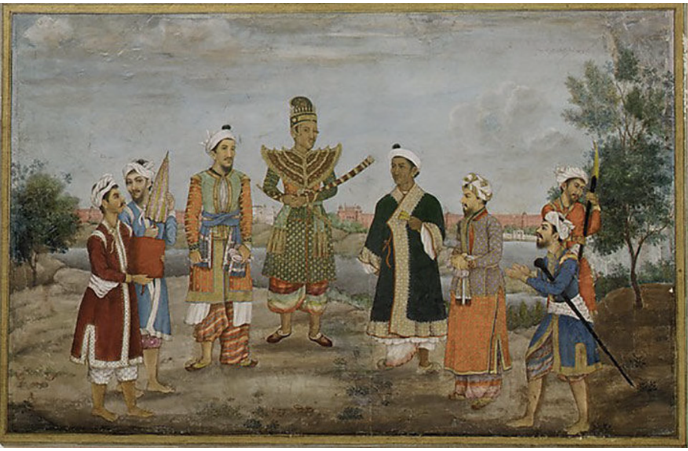

Miniature paintings from the Indian subcontinent first emerged during the
10th Century. These were produced on palm leaves until the introduction
of paper, and hence were small in size and portable. These often showed
stories from the Mahabharata & the Ramayana.
mughal era
Mughal miniature painting, which flourished between the 16th and 19th
centuries under the patronage of the Mughal emperors, is a distinctive
fusion of Persian elegance, Indian vibrancy, and Central Asian precision.
These works were frequently produced in imperial karkhanas and depicted
themes ranging from royal court scenes, military conquests, and dynastic
portraits to intimate moments of leisure and devotion.
Persian influence is evident in the floral margins, calligraphy, and
symmetrical layouts, while Indian influence shines through in the use of
local landscapes, textiles, and emotive expressions.
british raj
Under British influence, miniature artists often adapted their work to suit
European tastes. This meant a move away from traditional religious, literary,
and courtly subjects toward more secular and ethnographic themes, including
landscapes, portraits of local people, and documentation of flora and fauna.
British rule profoundly altered the trajectory of Indian miniature art by
disrupting traditional systems of patronage, introducing Western techniques
and themes, and catalyzing both decline and later revival of the form.

contemporary
While some artists remain faithful to handmade techniques, others blend
miniature painting with digital art, sculpture, video, textiles, and
installation, expanding the genre's boundaries.